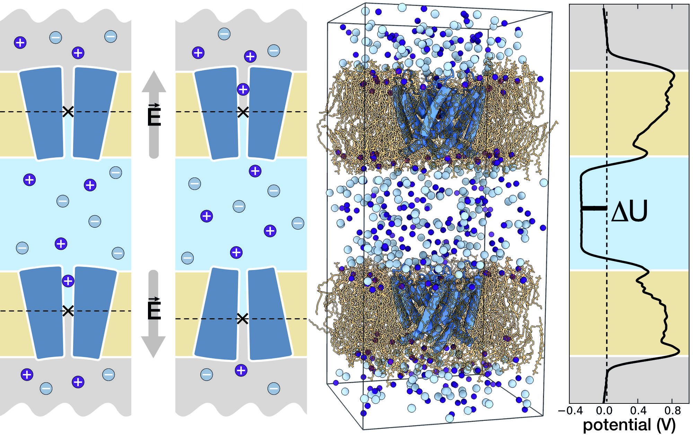

Ions in Action! Studying ion channels by Computational Electrophysiology¶

This module allows the detailed study of membrane-embedded ion channels (shown in dark blue in the figure) in GROMACS. By using an ion/water exchange protocol in a double membrane simulation setup, combined with an ion concentration and/or charge imbalance across the membrane, a steady state with a continuous flow of ions through the channels is achieved. For each channel, the anionic and cationic permeation events are recorded in the output file as a function of time. The permeation events reveal conductance, selectivity, and rectification behaviour, which allow a straightforward comparison to experiment. In addition, the ionic pathways through the channels are uncovered.
References
Kutzner, D. Köpfer, J.P. Machtens, B.L. de Groot, C. Song, and U. Zachariae doi:10.1016/j.bbamem.2016.02.006
Kutzner, H. Grubmüller, B.L. de Groot, and U. Zachariae doi:10.1016/j.bpj.2011.06.010